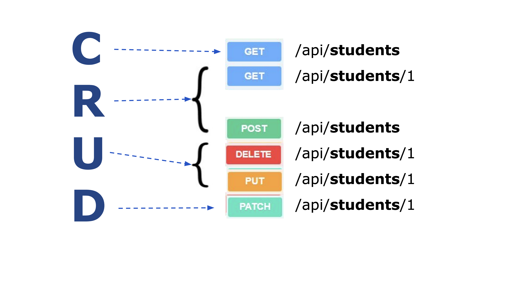

8. Flask API (dag 2)
8.1. Læringsmål
Kunne oprette et rest API lavet med Flask
Kunne arbejde med en SqlLite database
Kunne inkludere api kald til eksterne api´er i en Flask applikation.
8.2. Forberedelse
Vi arbejder videre med emnet og øvelsen fra i fredags.
Så lav så meget af øvelsen som i kan her i weekenden.
I kommer til på mandag at være forskellige steder i denne øvelse, men det er ikke noget problem i får bare nogle forskellige opgaver.
8.3. Dagens indhold
Vi arbejder videre med øvelsen fra i fredags.
I kan se den herunder.
8.4. Hjemmearbejde
Øvelsen skal være færdig og afleveres på
Aflever et link til et repository med koden, og en readmefil der beskriver hvad i har nået og hvad i ikke har nået af opgavens 10 punkter.
8.5. Materiale
8.6. Øvelser
1. Kig på følgende diagram og opret et API der følger disse routes.

2. I stedet for så lave det med students skal i lave det med members.
3. I skal som udgangspunkt læse denne liste med dictionaries som jeres datakilde.
4. Når i har fået det til at virke skal Api´et gemme og læse data i en Sqlite database. Det skal være det samme data som i listen, så i skal INSERT det i en tabel i databasen (executemany).
5. Hver Member skal altså have følgende attributter:
id, (primær nøgle og skal auto incrementeres)
first_name,
last_name,
birth_date,
gender,
email,
phonenumber,
address,
nationality,
active,
github_username
6. Man skal kunne se den enkelte members public github repositories som en del af json schemaet i feks. api/members routen (så det kan være at i skal ændre github_username på de 10 brugere til noget virkeligt). - (det burde være relativt simpelt en ad gangen gennem PUT api/members)
7. Hvis det member der vises er DIG, skal man også kunne se de private repositories.
8. I skal sørge for at de rigtige http statuskoder returneres med http responset.
9. Og Husk: der er regler for hvad der skal ske i et GIT POST, PUT, PATCH og DELETE request. De regler skal i følge. Her er det helt ok at spørge chatten om disse regler, men sørg for at skrive koden selv!
10. I skal også sørge for at fange eventuelle fejl, som et forkert id, forkert json i body osv.